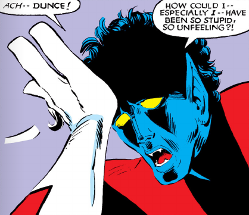

Maimonides on Thursdays
How precious are the words of the great R. Moses, few in number yet speaking volumes, who wrote about this world [i.e., the World to Come] in his commentary on chapter Helek. He said that in the World to Come our souls will apprehend secrets of the Creator in the same way they apprehend, in this world, secrets of the stars and spheres, or even more. They [the Sages] similarly said that the World to Come has neither eating nor drinking, the righteous sit with crowns on their heads and bask in the radiance of the Shekhinah.
Could we begin with a “Didn’t the Rambam say kishuf in Mitzrayim wasn’t real?”
Every Thursday class left me with the same question: how do you teach non-Christian philosophy to an audience that hasn’t been, and probably won’t be, educated in any religious language (if it has been educated even in Christian language at all), so that they can read and understand philosophical questions rooted in non-Western traditions?
This led me to keep repeating that “Thursday’s class could really get to the point and go through the Kotzker, Munkatch, Klausenburg, the Gra and Rav Kapach on sheidim and kishuf. A simple ‘Didn’t the Rambam say kishuf in Mitzrayim wasn’t real?’ would do the trick,” until I finally realized it probably wouldn’t work at all. In the end, not only is this not a yeshiva class, but the students always need endless introductions: “What is Sephardic Judaism?”, “How does Jewish religion even work?”, “What is halakha?”
Jan Westerhoff’s Nāgārjuna’s Madhyamaka: A Philosophical Introduction offers an interesting hint at this kind of problem. Wittgenstein is basically the fun part of Nāgārjuna (the tetralemma, pratītyasamutpāda, svabhāva, śūnyatā, the Naiyāyika idea that every negation implies an affirmation, linguistic pragmatism, Madhyamaka and so on) without the boring parts (the endless refutations of positions X, Y and Z). It’s the only instance of the comparative method that I’m willing to approve, because Westerhoff basically solves the problem of having to teach people endless schools and positions of an already misunderstood religious tradition.
